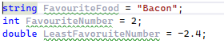
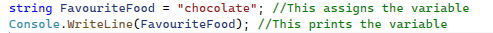
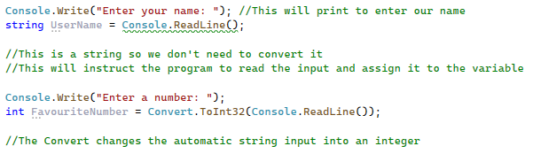

Variables are one of the most essential parts of any program. They can be used to store: text, numbers, orders, and much more. A variable works by using a name to assign a value which for beginners can seem quite confusing. For example, imagine I have a box called User's Name (the box would be the variable) and inside the box, I have a sheet of paper with written on it says John (this would be the physical data assigned to the variable), this would be a variable as data can be taken out to find out what the person's name is and it can be changed.
Here's a video explaing variables if you're still confused!
There are 3 main types of variables I am going to talk to you about strings, integers, and doubles. A string means that text is assigned to the variable for example, this could be a name such as "Henry" or "Jessica", this does not have to be a singular word as it can also be multiple words. An integer (which in code is abbreviated to int) is a whole number that can be stored within a variable such as 3, 0, or -563. A double is a decimal number that can be assigned to a variable such as -4.3, or 6.8. A double number cannot be assigned to an integer but, an integer can be assigned to a double although it may be formatted oddly.
Let's now try using variables. To write a variable we first must declare what type of variable it is, for this example, I will use a string. Firstly, we write on our program string. Next, we need to declare the name of the variable, for this example, I want to save my favourite food so I am going to call this variable FavouriteFood. When storing a variable, there must be no spaces in between. that the name is appropriate and the name is not too long. A tip instead of using spaces is to capitalise a word where there would have been a space or use an underscore, which will make it clearer to yourself. Now we have the string FavouriteFood, we then need to assign it which we can do using an equal (=) sign. After that, we then name our favourite food within speech marks and then add a semi-colon on the end to signal the end of the command. For integers and doubles it works quite similarly, however, we use int or double at the start and we don't put our value in speech marks. For example:

As you may have noticed, when we run this program nothing appears on this screen, this is because we have not instructed the computer to print anything. From chapter one, we learnt the Console.Writeline() which helps us print out text. Instead of printing custom text in the Console.Writeline() we can print our variables! This can be done by inserting our variable name into our Console.Writeline() without using speech marks (as we are not printing text) and this should print what is inside our variable. Remember not to add the variable type before (such as string) as this is not needed within printing our variable. For example.

Now an important factor of any program is that the user can enter their data about themselves (which we can store in variables). For example, let's say the user wants to store their name which in this case we will store in a variable called "string UserName". Firstly, we need to print something to the screen to tell the user what to input, we will print the Console.Write("Please enter your name: ");. Now if you look closely at this line of code you will notice I've used Console.Write and at the end, I've added a colon with a space after. This means that when the user enters their name it will be on the same line and automatically spaced apart using the colon and the space. Then on the next line, we need to use Console.Readline() and assign it to the variable. This can be done by first naming the variable then adding an = sign (to show we are assigning it to that variable) and then writing Console.Readline() which will take the user's input. However, when we use Console.Readline automatically enters our input as a string, therefore we will need to change it if it is a number (whether decimal or integer). This can be achieved using Convert.ToDouble() or Convert.ToInt32() and then placing the Console.Readline() inside these brackets to show we are converting our input. It will probably appear simpler if I show you an example (and I strongly recommend you to experiment with it. Remember each line must end with a semi-colon!

After learning all these techniques, you should be able to store data about the user and be able to print it out. However, we may want to print it out in a more organised way. This can be achieved by inserting text and combining it with the variable and combining it with a plus symbol, for example, Console.Writeline("This is the user's favourite color " + FavouriteColor). Remember to be very careful with your spacing as when you print the variable there are no gaps with it so use it in the text before or after depending on where you put it.
User Challenge: Make a program that displays the user's favourite colour, animal, and food using their input and displaying it neatly.